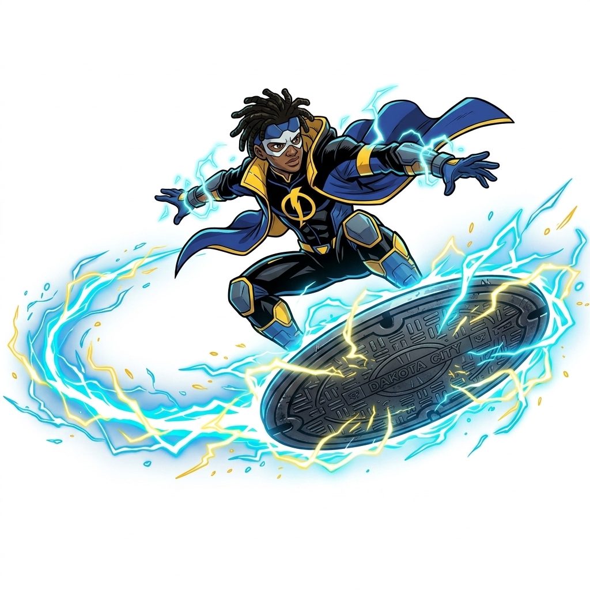
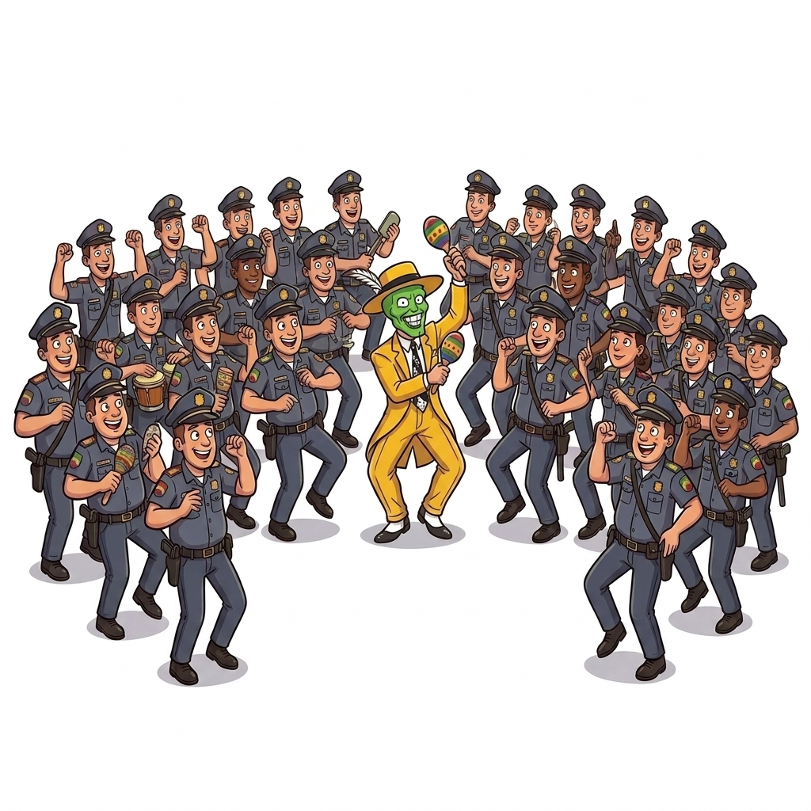
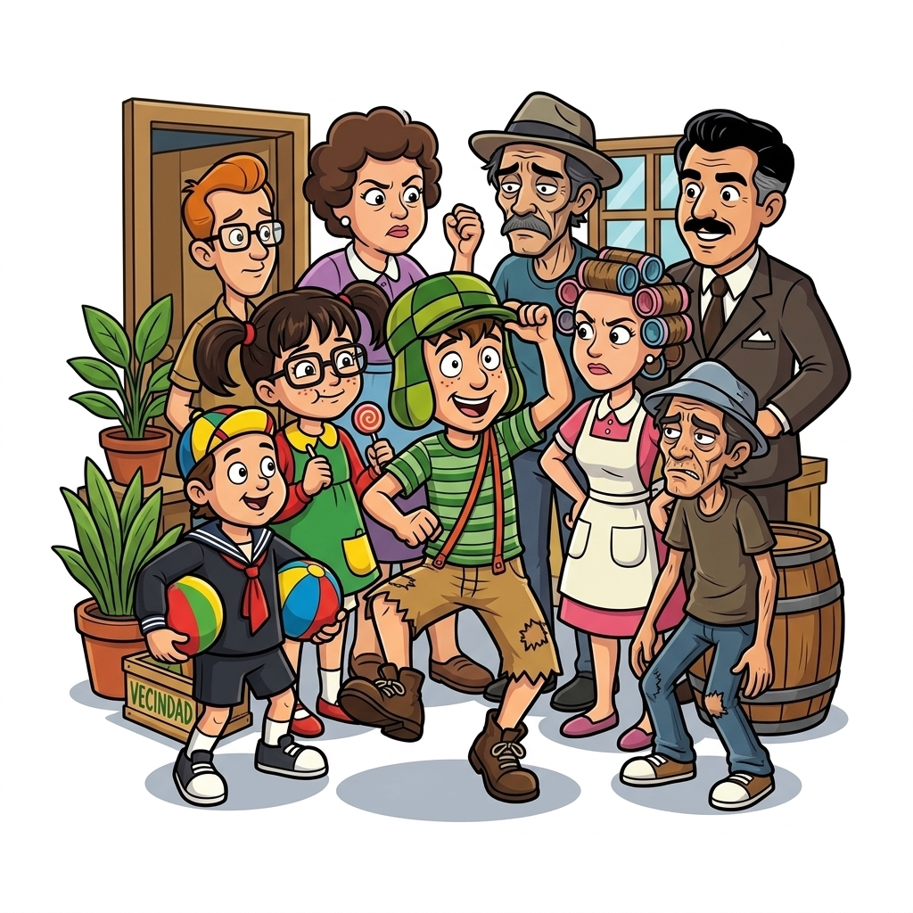

Meu primeiro post
Por: Roberth Vinicius Padilha
Boas-vindas ao meu novo blog! Aqui vou compartilhar as mudanças e o avanço da técnica de animação na história.
Fontes:google gemini

O "Skate" de Tampão de Bueiro
Por: Roberth Vinicius Padilha
A ideia genial e improvisada do Virgil de usar um tampão de bueiro de metal para flutuar no ar usando seu eletromagnetismo, criando o transporte mais estiloso dos desenhos.
Fontes:google gemini

O Show da Polícia Dançarina
Por: Roberth Vinicius Padilha
A cena absurda em que ele é cercado por dezenas de policiais armados e, em vez de fugir, puxa um maracá e faz todo o esquadrão parar o cerco para dançar rumba com ele.
Fontes:google gemini

O Refresco de Três Sabores
Por: Roberth Vinicius Padilha
A lógica perfeita do Chaves vendendo o suco que "é de limão, parece de tamarindo, mas tem gosto de groselha", enlouquecendo o Seu Madruga ao tentar entender o sabor.
Fontes:google gemini